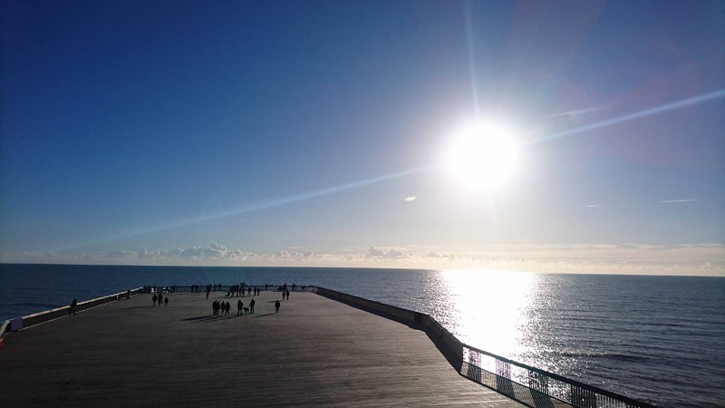
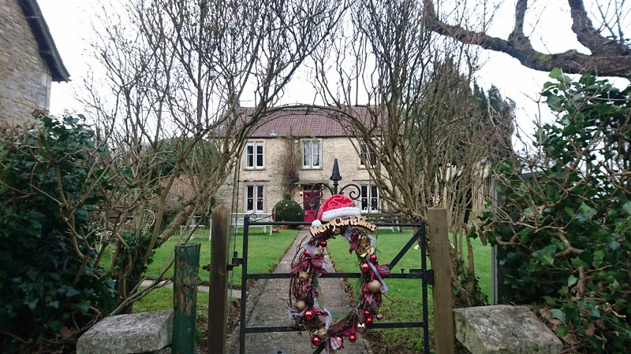
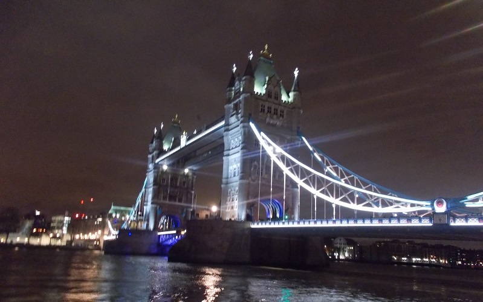

UNITED KINGDOM
航空会社：British Airways
日程：2017/12/20-30
Schedule
滞在スケジュールです。
2017/12/21 : London
Buckingham Palace,Trafalgar Square,National Gallery etc
2017/12/22 : York
York Minster,Bettys Café Tea rooms,York old town etc
2017/12/23 : Stonehenge,Bath,Lacock Village
2017/12/24 : London
Tower of London,London bridge,Christmas Market(River Thames) etc
2017/12/25 : London
Chirstmas Day!!
2017/12/26 : London
Boxing Day!! Regent Street etc
2017/12/27 : London
BakerStreet,BakerStreet 221b,Afternoon tea at Marble Arch,Christmas Marcket(Hyde Park) etc
2017/12/28 : Hastings,London
Hastings Castle,Hastings Pier,Simpsons etc
2017/12/29 : Cotswolds
Burford,Bibury,Bourton on the water,Broadway
2017/12/29 : FosseFarmHouse
Pictures
私が撮った写真です。
-

PLACE : Hastings Pier
-

PLACE : FosseFarmHouse
-

PLACE : London bridge
-

PLACE : Cotswolds
-

PLACE : London
-

PLACE : York
Blog
私がかいたイギリスに関する記事です。
イギリスに行った話
簡単に旅のハイライトをまとめています．
イギリスのススメ～York / Hatings編～
イギリスの地方都市YorkとHastingsのおすすめの場所や行き方などをまとめています．
イギリスのススメ～FosseFarmHouse編～
アニメきんいろモザイクの聖地の一つ，FosseFarmHouseの行き方や予約の仕方などをまとめています．
イギリスのススメ～Bath/Cotswolds編～
イギリスの地方都市BathとCotswoldsのおすすめの場所や行き方などをまとめています．